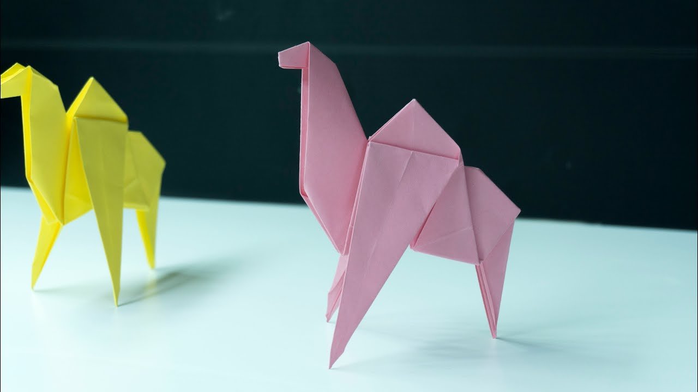
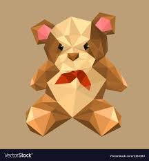
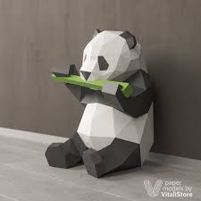

Origami Designs
About Us
Follow Us

Intresting Facts About Camel:
- Camel's ears are furry.
- Camel can move easily across the sand because of its specially designed feet.
- When they find water , they will drink as much as possible.
- Camels have thick lips which let them forage for thorny plants other animals can't eat.
- Camels have three sets of eyelids and two rows of eyelashes to keep sand out of their eyes.
- There are two types of camels: One humped or “dromedary” camels and two humped Bactrian camels.

facts about chameleon:
- chameleon are reptiles that are part of the iguana suboder.
- chaning skin color is an important part of communiction among chameleons.
- most chameleons have a prehensile tail that they use to wrap around tree branches.
- their feet work like salad tongs.
- almost half of all known species live in madagascar.
- skin crystals enable them to change color at will.
Facts About Pigeon::
- Pigeons are incredibly complex and intelligent animals.
- Pigeons are highly sociable animals.
- Pigeons are renowned for their outstanding navigational abilities.

Facts About Teddy bear: :
- The term bear-hug was first recorded in 1846.
-
- The Oxford English Dictionary dates the first use of the term teddy bear to 1906.
- The Teddy Bears' Picnic song was originally called The Teddy Bear Two Step.

Facts About Panda:
- Pandas go from pink to white and black (or brown).
- Pandas are "lazy" — eating and sleeping make their day.
- An adult can eat 12–38 kilos of bamboo per day!